| Name | Unicode | Glyph | Unicode Name | Description | Aliases |
|---|
| djcy | U+0452 | 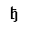 | CYRILLIC SMALL LETTER DJE | =small dje, Serbian | |
| DJcy | U+0402 |  | CYRILLIC CAPITAL LETTER DJE | =capital DJE, Serbian | |
| dscy | U+0455 |  | CYRILLIC SMALL LETTER DZE | =small dse, Macedonian | |
| DScy | U+0405 |  | CYRILLIC CAPITAL LETTER DZE | =capital DSE, Macedonian | |
| dzcy | U+045F |  | CYRILLIC SMALL LETTER DZHE | =small dze, Serbian | |
| DZcy | U+040F | 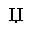 | CYRILLIC CAPITAL LETTER DZHE | =capital dze, Serbian | |
| gjcy | U+0453 |  | CYRILLIC SMALL LETTER GJE | =small gje, Macedonian | |
| GJcy | U+0403 | 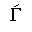 | CYRILLIC CAPITAL LETTER GJE | =capital GJE Macedonian | |
| iukcy | U+0456 |  | CYRILLIC SMALL LETTER BYELORUSSIAN-UKRAINIAN I | =small i, Ukrainian | |
| Iukcy | U+0406 |  | CYRILLIC CAPITAL LETTER BYELORUSSIAN-UKRAINIAN I | =capital I, Ukrainian | |
| jsercy | U+0458 |  | CYRILLIC SMALL LETTER JE | =small je, Serbian | |
| Jsercy | U+0408 | 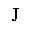 | CYRILLIC CAPITAL LETTER JE | =capital JE, Serbian | |
| jukcy | U+0454 | 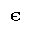 | CYRILLIC SMALL LETTER UKRAINIAN IE | =small je, Ukrainian | |
| Jukcy | U+0404 | 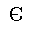 | CYRILLIC CAPITAL LETTER UKRAINIAN IE | =capital JE, Ukrainian | |
| kjcy | U+045C | 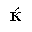 | CYRILLIC SMALL LETTER KJE | =small kje Macedonian | |
| KJcy | U+040C |  | CYRILLIC CAPITAL LETTER KJE | =capital KJE, Macedonian | |
| ljcy | U+0459 |  | CYRILLIC SMALL LETTER LJE | =small lje, Serbian | |
| LJcy | U+0409 | 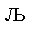 | CYRILLIC CAPITAL LETTER LJE | =capital LJE, Serbian | |
| njcy | U+045A |  | CYRILLIC SMALL LETTER NJE | =small nje, Serbian | |
| NJcy | U+040A | 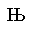 | CYRILLIC CAPITAL LETTER NJE | =capital NJE, Serbian | |
| tshcy | U+045B |  | CYRILLIC SMALL LETTER TSHE | =small tshe, Serbian | |
| TSHcy | U+040B | 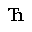 | CYRILLIC CAPITAL LETTER TSHE | =capital TSHE, Serbian | |
| ubrcy | U+045E |  | CYRILLIC SMALL LETTER SHORT U | =small u, Byelorussian | |
| Ubrcy | U+040E |  | CYRILLIC CAPITAL LETTER SHORT U | =capital U, Byelorussian | |
| yicy | U+0457 |  | CYRILLIC SMALL LETTER YI | =small yi, Ukrainian | |
| YIcy | U+0407 | 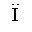 | CYRILLIC CAPITAL LETTER YI | =capital YI, Ukrainian | |